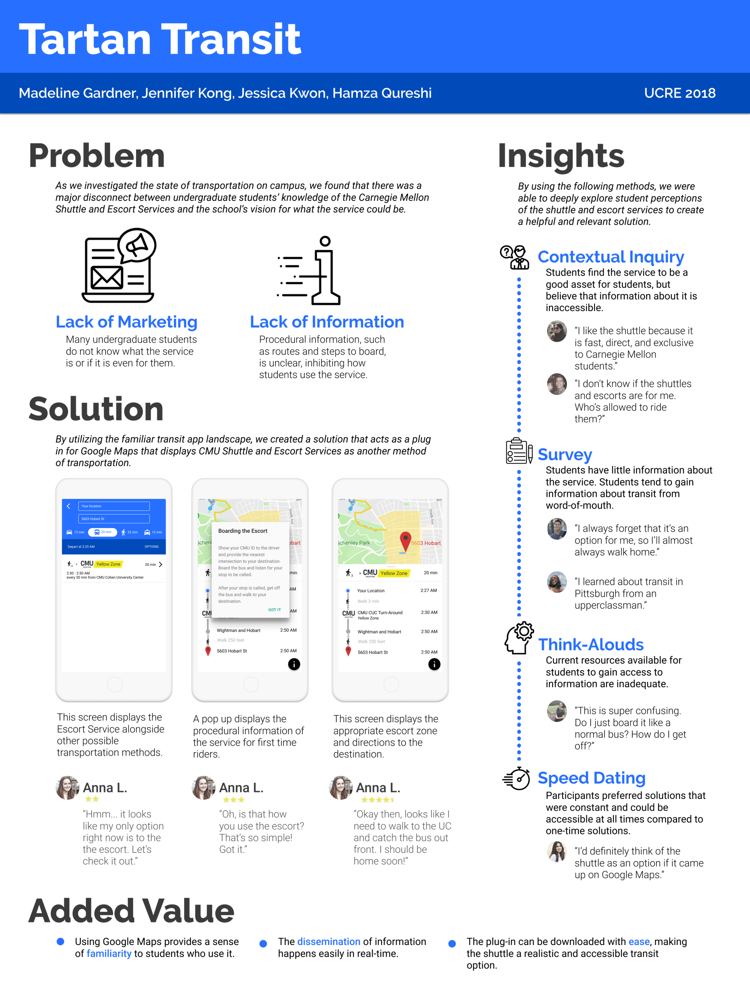
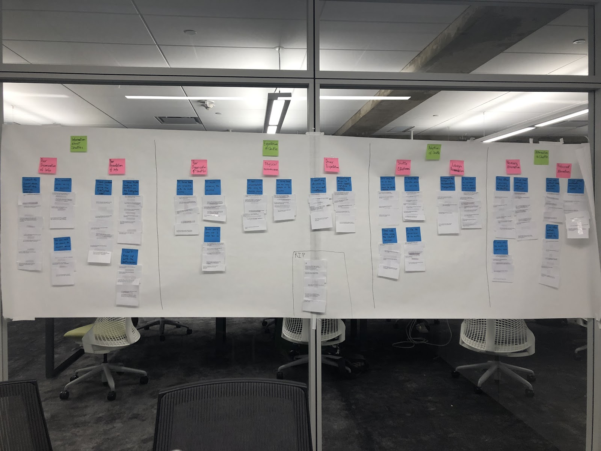

Tartan Transit
The Problem
At Carnegie Mellon University, students are provided a shuttling/escort service whose goal is to bring students from campus to their desired locations safely. However, the service has been seeing a significant drop in ridership. As a result, the Graduate Student Assembly is examining the transportation needs of the CMU community and trying to find ways to improve options for students to get to and from campus. Their vision is that every student has access to multiple kinds of reliable transportation that allow for safe, direct commutes to and from campus.
Key guiding questions: Are students satisfied with the services they have now? What improvements could be made? Why do current students not use the existing shuttle and escort services, and what could be done to increase usage?
At the end of this project, we presented it to our stakeholders.
Team: Hamza Qureshi, Jessica Kwon, Madeline Gardner
The Solution

From our research, we found that the users biggest hurdle is understanding how to use the services and immediate in-the-moment information that can help them plan their trips. Our solution was to create Tartan Transit, a Google Maps plug-in/extension, that would provide a sense of familiarity due to the context of Google Maps, while quickly disseminating real time information that tracks the bus and procedural information, and provide service with ease and to encourage users to interact with the current system.
Research | Stakeholder Mapping
Background research was done to understand the current ‘ecosystem’ of the transit system at CMU. We were given several contextual inquiries to pull data from. There were several ‘actors’ in the system, each with different goals and motivations. For example, the Director of Parking and Transportation (P&T), who is charge of all parking and transportation at CMU, wants take the shuttle and escort service under P&T instead of the Police Department at CMU.

Research | Affinity Diagram
We conducted contextual inquiries on target users/actors, such as graduate students who use and didn’t use the escorts and a member of the GSA to further understand how the shuttle/escort system operates. The goal was to understand the users behavior in regards to how to get to and from campus, problems they have had, other services they use, etc… After the inquiry we created notes from the interview and found patterns within the notes.

We found several themes (the green post-its): information about shuttles, expectations of shuttles, adoption of shuttle, and alternatives to shuttles.
Here are several (blue) notes that were impactful to overall research process:
- I want to learn more about the service overall.
- I’m confused while using the shuttles.
- No one told me about the shuttle service.
- I think there are problems with the shuttle routes.
- I hate missing the shuttle.
- I only use the shuttle for specific needs.
- I use other methods because I need to.
Ideation | Contextual Inquiry
After completely understanding the landscape we were operating in, we started diving into understanding user needs. We asked similar questions to the previous contextual inquiry but we added a focus on how users acquired information about the service. From the inquiry, we found that the shuttle service is useful because it is only for CMU students and therefore meets the needs of this population. Many people mentioned that the service feels safe because only CMU students are on the shuttles. We also found out that some students who live off-campus feel that their commute is scary, which shows a need for a safe and reliable method of transportation and highlights the positive aspects of the shuttle and escort services. However, we also found out that the accessibility of the shuttle service information is poor. Most students did not fully understand how to use the shuttle service, even though the shuttle service can be very valuable, as previously stated. Students did not feel the need to learn more about the service because the information is difficult to attain and not well-advertised by the university. One undergraduate even thought that the shuttle service was only for graduate students, even though the shuttles are meant to benefit the entire university population. Some thought the shuttles were only for commuting, when the service offers bus stops around nearby grocery stores, which most of our interviewees usually get to through a rideshare service.
Ideation | Design Artifact/ Low Fidelity
With all those findings, we were on our way to potential solution. Our team went onto figma and designed different iterations of the same task (showing procedural information). We were fleshing out the idea of integrating the shuttle and escort service into Google Maps. With the design artifact, we conducted several five second tests.
Solution


Finally…
This is Tartan Transit.
Our solution focuses on ensuring familiarity and visibility of the CMU transportation services. By exposing CMU transportation options within Google Maps, a commonly used transportation app among students, users can easily choose to use CMU services when appropriate.
Anna is a CMU undergraduate student who lives off campus. She has never used the CMU shuttle or escort services before but decided to give the new Google Maps plug-in a try. Late at night, Anna types in the address to her house and finds that the Yellow Zone shuttle can drop her off near her home.
She clicks on the escort option to view further directions. A pop-up screen shows her how to use the escort system. Anna is relieved to have known this information and now feels more prepared to ride the escort.
After she dismisses the pop-up screen, Anna is able to view real-time information and detailed directions on where she can get on and off the escort. Anna is glad to have found a safe new method to go home late at night.
Clickable prototype with shuttle service example: https://invis.io/MVPFAUOPQY2